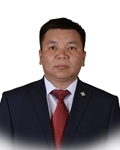

Member of the State Great Khural of Mongolia
Enkhbold Luvsan
Member of the State Great Khural of Mongolia ENKHBOLD Luvsan
Mongolian People's Party
Education, graduated schools, education degree:
1989 Secondary school #1, Dalanzadgad, Umnugobi 1993 Electrical engineer, Krasnodar City University, Russian Federation 1999 Accountant and economist, National University of Mongolia 2004 Master of Governance, Academy of Management, Ulaanbaatar 2007 Lawyer, Institute of General Intelligence Agency of Mongolia
Working Experience:
2002 - 2015 Founder and Director, “D and L Group” LLC 2004 Founder and Chairman, “Mongolian Gobi Development Fund” NGO 2005 - 2007 Chairman, “Umnugobi Youth Development Center” NGO 2007 - 2008 President, JCI Capital 2012 - 2016 Member of Citizenens Representatives Hural of Umnugobi aimag 2016 Member of the State Great Hural (Parliament) of Mongolia
Awards:
2010 Order of Labour 2011 Merited employee of Bank and Finance
Foreign language knowledge:
English; Russian